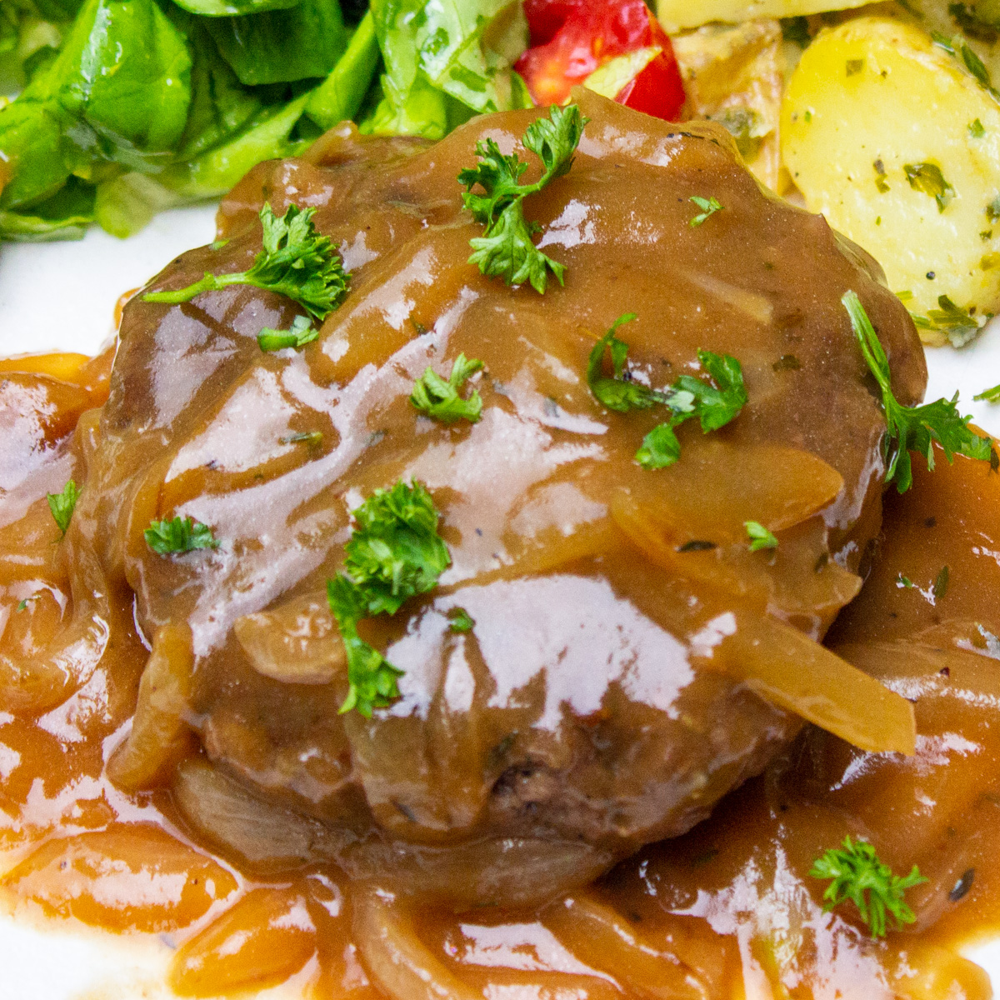

Hamburger Steak With Onions and Gravy

Hamburger Steak
Tasty hamburger "steaks" smothered in gravy and onions. Serve with hot rice or potatoes for an easy-to-make dinner classic. It's a great way to dress up a pound of ground beef and you probably have all the ingredients on hand!
Ingredients
1 pound ground beef
1/4 cup bread crumbs
1 egg
1 teaspoon worcestershire sauce
1/2 teaspoon seasoned salt
1/2 teaspoon onion powder
1/2 teaspoon garlic powder
1/8 teqaspoon ground black pepper
1 tablespoon vegetable oil
1 cup thinly sliced onion
2 tablespoons all-purpose flour
1 cup beef broth
1 tablespoon cooking sherry
1/2 teaspoon seasoned salt
Steps
- Mix ground beef, bread crumbs, egg, Worcestershire sauce, salt, onion powder, garlic powder, and pepper together in a large bowl until combined. Form into 8 balls and flatten into patties.
- Heat oil in a large skillet over medium heat. Add patties and onion; fry until patties are nicely browned, about 4 minutes per side. Transfer beef patties to a plate, and keep warm.
- Sprinkle flour over onions and drippings in the skillet. Stir in flour with a fork, scraping bits of beef off of the bottom of the skillet as you stir. Gradually mix in beef broth and sherry. Season with seasoned salt. Simmer and stir over medium-low heat until gravy thickens, about 5 minutes.
- Reduce heat to low, return patties to the gravy, cover, and simmer until cooked through, about 15 minutes.
Home